Islands
Islands One of the best ways to unwind after climbing Kilimanjaro or going on a Tanzanian safari is to visit Zanzibar — relax on the white-sand beaches of the Indian Ocean and treat your taste buds to some incredible food.
A mix of cultures has shaped Zanzibar's cuisine into a unique fusion of Bantu culinary traditions and Arab, Portuguese, Indian, European, and even Chinese influences. Today, local traditional recipes feature complex bouquets of fragrant spices, coconuts, cassava, rice, and, of course, seafood.
In this article, we’ll introduce you to authentic dishes you must try in Zanzibar and where to find them.
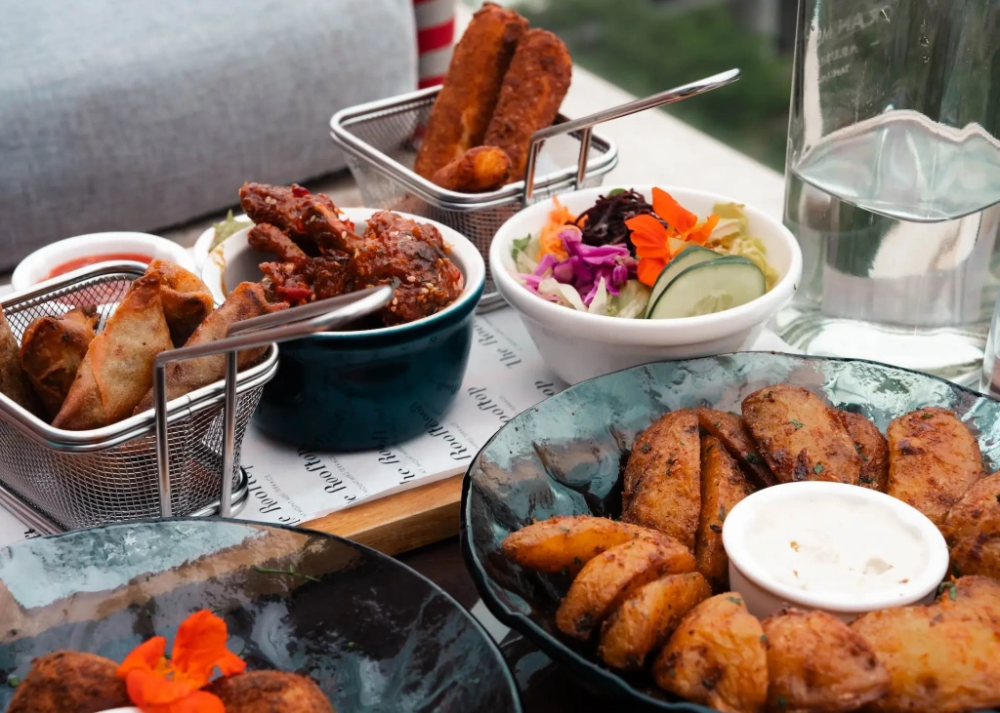
Historical background of Zanzibar cuisine
The traditional culinary culture of the islands is deeply connected to Zanzibar's rich history. Researchers believe that the first settlers on the archipelago were Bantu people from mainland East Africa, even before the 6th century. They primarily relied on fishing, so it's no surprise that their diet was centered around seafood: tuna, mackerel, squid, lobsters, octopus, and oysters. The ocean's bounty continues to be a key ingredient in many dishes of Zanzibari cuisine.
Later, other ingredients were added to the traditional cuisine, many of which were introduced during Portuguese influence and later European colonialism. During this time, beans, sweet potatoes, yams, and were staples brought to Zanzibar.
Around the 10th century, Arabs began settling on the archipelago. They quickly integrated into the local community, and within a short time, the so-called Afro-Persians became the core population of Zanzibar. Islam spread across the islands, and the locals started referring to themselves as "Shirazi," in reference to Shiraz, an ancient principality in Persia. The Arab settlers brought new recipes and ingredients with them, introducing spices, coconut, mango, citrus fruits, and rice to Zanzibar’s cuisine.
Between the 15th and 16th centuries, during Portuguese rule, corn, pineapple, and cassava became common ingredients in many local dishes.
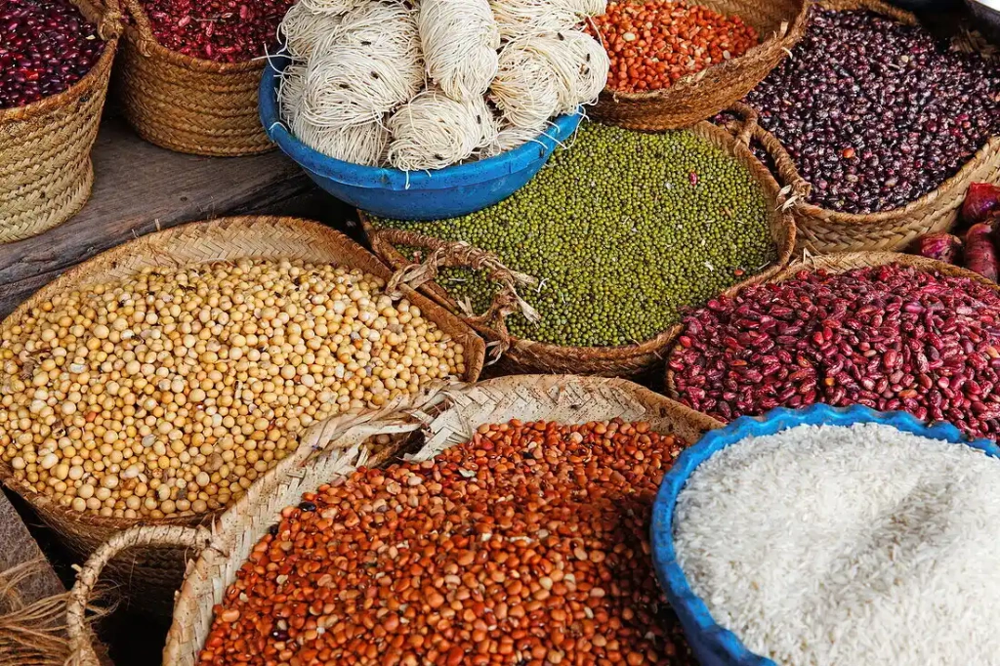
By the end of the 16th century, power again shifted to the Arabs, specifically to the Omani Sultanate. With the active development of trade relations between the archipelago and India, new spices and traditional Indian dishes began to make their way to the islands, including masala (a blend of spices), , curry, fish cakes, , and many other recipes. Since then, Zanzibar spices have become one of its most iconic features, earning it the nickname "Spice Island."
By the end of the 19th century, Germany and Great Britain began to exert influence over the East African coast and Zanzibar. The Europeans didn't integrate into the local population as much as the Arabs had, so their impact on shaping the local traditional cuisine is less pronounced. However, in Tanzanian restaurants and eateries, it’s common to find a variety of typical Western dishes on the menu.
Top 9 dishes to try in Zanzibar
Zanzibar's food is as rich and diverse as the archipelago's history. From this culinary abundance, we've selected nine traditional dishes that form the core of the national cuisine and perfectly reflect the local taste preferences.
Zanzibar pizza
One of Zanzibar's most popular and well-known dishes is "pizza." Despite the name, this street food is not quite what we typically think of as pizza.
It is more of a stuffed and fried dough with a crispy crust. It can contain a mix of minced meat, chicken, or vegetables, along with eggs, cheese, and spices. This semi-closed flatbread is cooked on a hot skillet, which makes the thin dough crispy, while the filling stays juicy and gooey.
There are also sweet variations of Zanzibar pizza, where the dough is filled with banana, chocolate, or coconut.
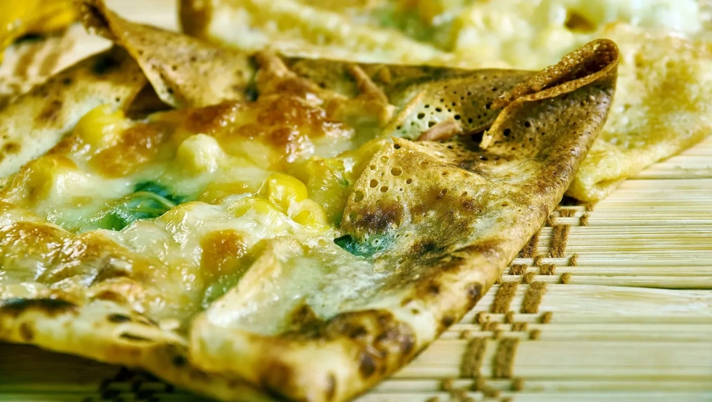
Where can I try it?
Travelers can find Zanzibar pizza at street kiosks and Forodhani Gardens, located on the main square along Stone Town's waterfront. As the sun sets, locals and visitors alike gather here to have dinner and try local delicacies at the Night Food Market. It is a perfect place to dive into Zanzibar's street food culture.
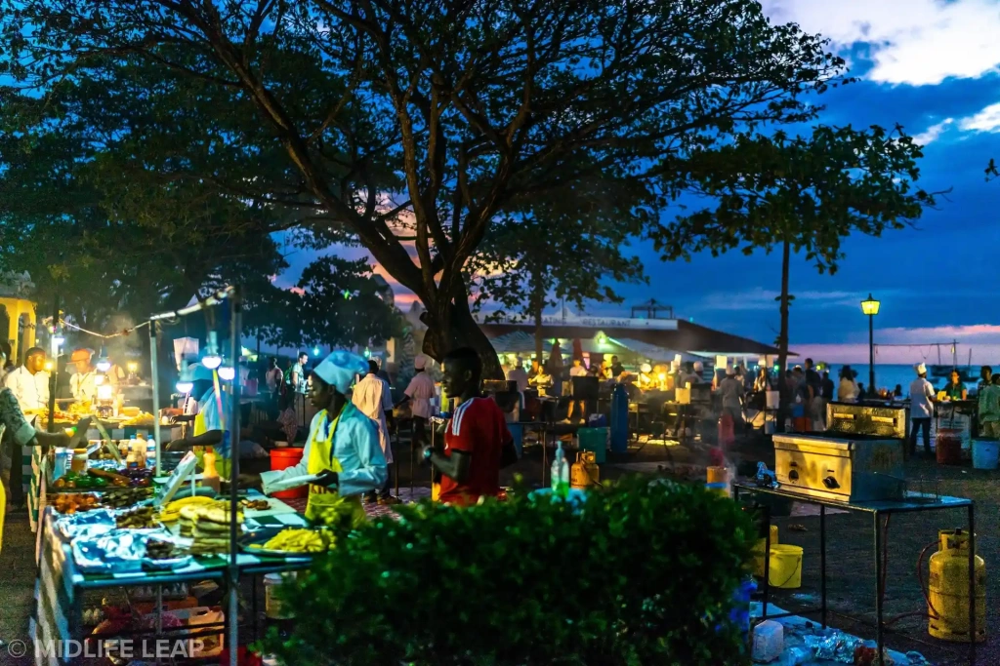
Chips Mayai
Zanzibari chefs put a twist on classic French fries to create chips mayai (also known as chipsi mayai). In this variation, potatoes fried in a generous amount of vegetable oil are mixed with eggs and then fried in a pan, resulting in something like a potato omelet. The dish is served with chopped onions, tomatoes, spicy chilli sauce, and green peppers. Many locals enjoy this treat for breakfast, lunch, and dinner. It is often paired with chicken or seafood, such as shrimp or octopus.
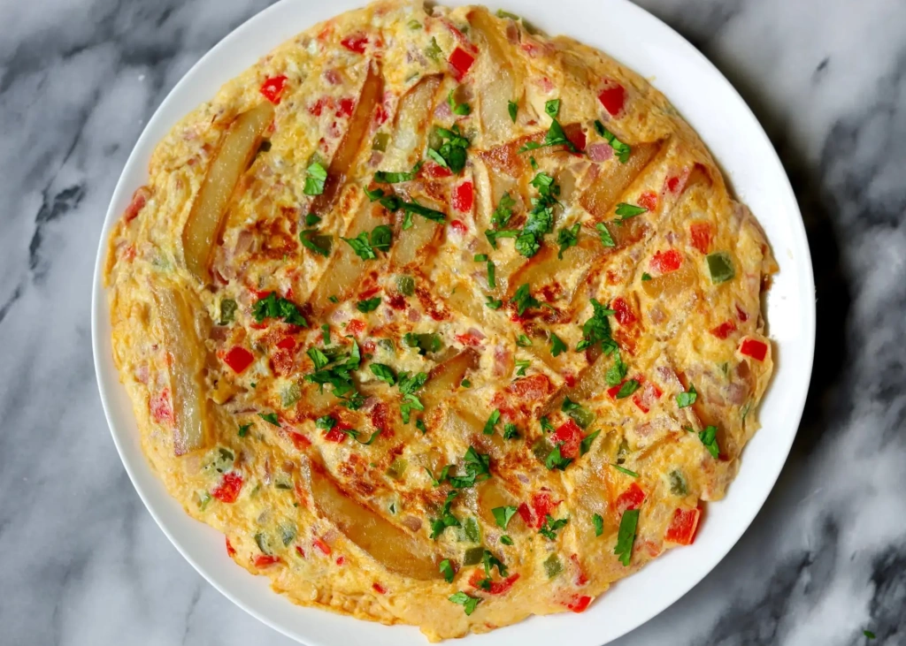
Where can I try it?
Chipsi Mayai is a traditional street food. You can find it at the Forodhani Gardens Night Market or with street vendors. The dish is so popular that it's available from nearly every street vendor and local eatery.
Urojo soup
Urojo soup, also known as Zanzibar mix, is a dish that first appeared in Zanzibar and is now popular across East and West Africa. The ingredients vary slightly depending on the season and each household's preparation style. However, the spicy, tangy flavor and thick consistency remain.
In the classic version, the soup is made with tamarind, tomatoes, coconut milk, and a mix of spicy seasonings. Additional ingredients include vegetables, crispy fried potatoes, or dough balls called bhajis. The dish is typically served with chicken, meat, or fish. In Zanzibar, urojo is commonly eaten for breakfast or in the evening after dinner.
Where can I try it?
People say the best Urojo soup is made at the Manta Resort restaurant on Pemba Island. Here, you can enjoy a hearty and delicious meal while taking in the magnificent ocean view. In addition to Urojo, the restaurant serves other traditional seafood dishes and signature Tanzanian coffee.
If you're staying in Stone Town, head to Forodhani in the evening. This versatile market offers the most authentic delicacies, including the famous Tanzanian soup.
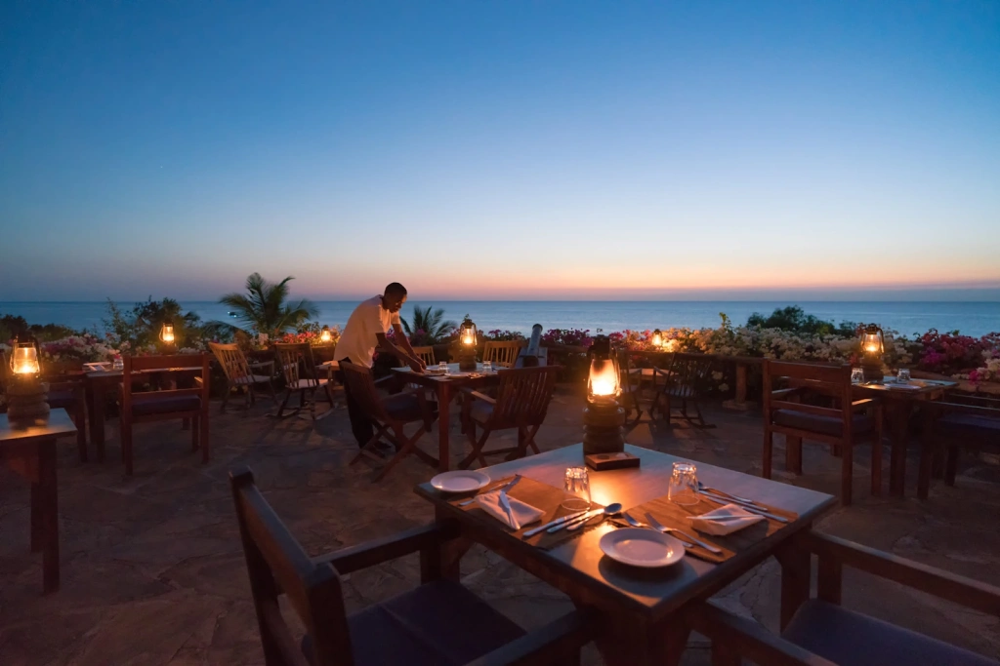
Octopus curry: pweza wa nazi
Zanzibar is the perfect place to enjoy dishes made with fresh seafood. Octopus curry stands out as a hallmark of Zanzibari cuisine, embodying the island’s rich culinary heritage. The octopus is cooked in a rich, creamy coconut curry sauce, with garlic, ginger, tomatoes, turmeric, and cumin always added. The result is a rich, flavorful dish that goes perfectly with rice or ugali, a cornmeal-based staple.
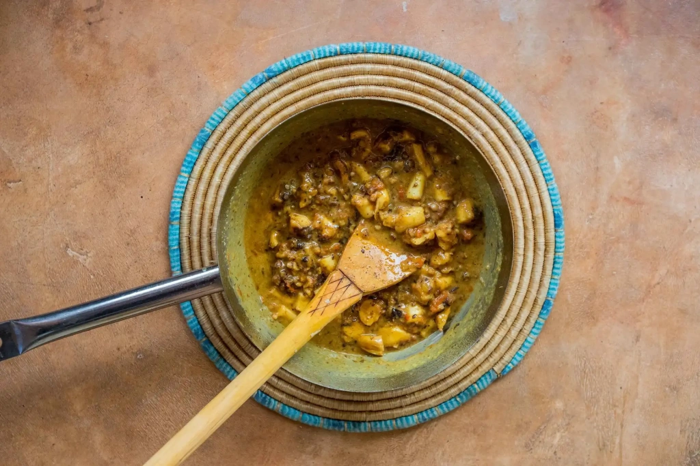
Where can I try it?
You can enjoy the taste of tender octopus with curry at Aya Beach Restaurant. The menu here features not only Zanzibar delicacies but also familiar Western dishes. So, if you're not a fan of the overly spicy local treats, you'll definitely find something more to your taste.
Another interesting option is The Rock Restaurant, one of the most unique establishments in Zanzibar. A small, cozy house standing alone on a rock offers a stunning view of the Indian ocean on one side and the pristine beach on the other. During high tides, the Rock Restaurant is entirely surrounded by water. Dining here offers a memorable culinary experience, thanks to both the food and the stunning setting. Most of the seafood used in the dishes is collected directly from the reefs around the restaurant, and fresh fish is caught daily. Reservations, however, should be made in advance, preferably two weeks ahead.
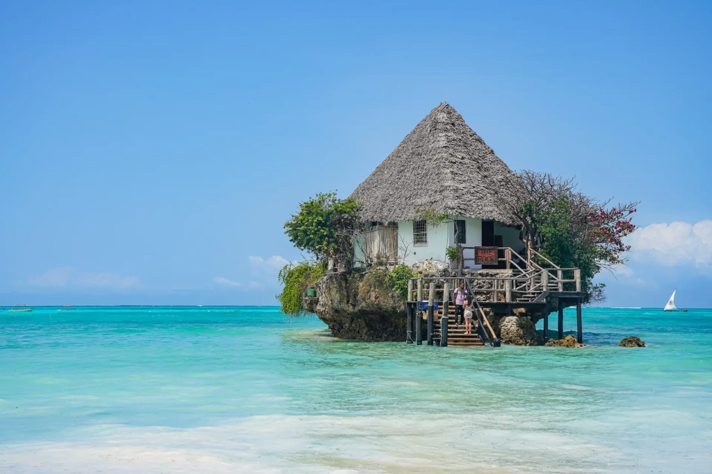
Mandazi sweet dough
A favorite snack in Zanzibar is the sweet, airy mandazi, which is slightly similar to donuts but has a tropical twist. Locals typically enjoy them for breakfast or pair them with tea or hot coffee. The dough combines sugar, coconut milk, flour, and yeast. Sometimes, nuts and cardamom are added before frying. The result is a delicious sweet treat that’s especially popular along the East African coast.
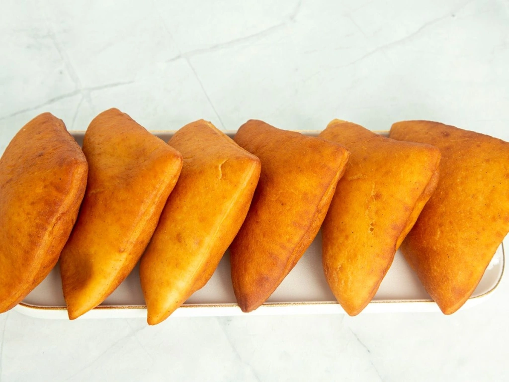
Where can I try it?
The cozy ZanziBarista cafe serves fresh coconut-flavored mandazi and aromatic coffee, making it the perfect breakfast option before exploring Stone Town's historic architecture. You can also find fluffy Tanzanian donuts at the Darajani market, near the coastline, or nearly every street kiosk around Tanzania.
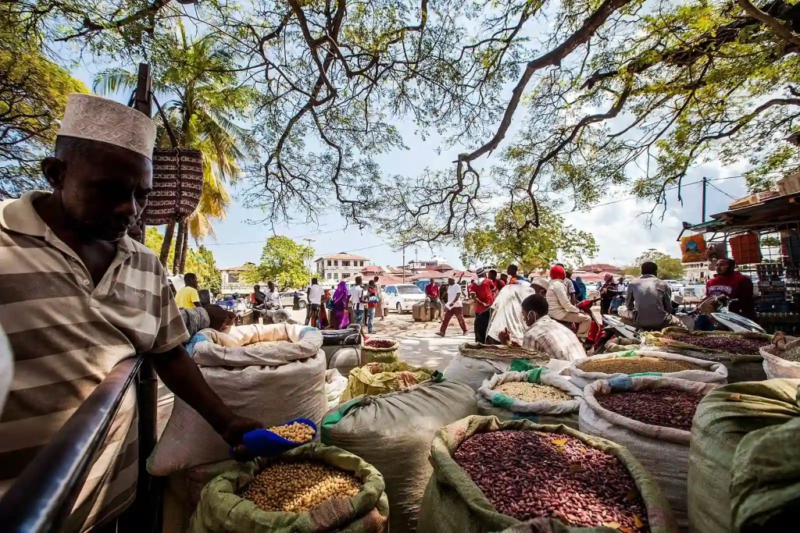
Biryani
With roots in Indian cuisine, this dish is Zanzibar’s take on pilaf. It’s made with basmati rice and tenderly cooked meat, usually chicken or goat, along with a blend of cloves, cinnamon, cardamom, cumin, and saffron, giving the rice a golden hue. Variations of the dish use fish or seafood instead of meat. It’s traditionally topped with crispy, golden-fried onions and boiled eggs. The result is a hearty, flavorful dish with a distinct Zanzibar twist.
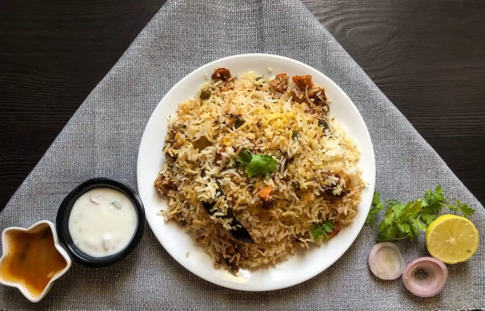
Where can I try it?
The Zanzibar Coffee House boutique hotel restaurant serves authentic Zanzibar biryani. Located on the rooftop of an ancient building dating back to the Arab rule era, it offers a breathtaking view of the lively Mkunazini district in the heart of Stone Town. On the first floor, you’ll find a cozy cafe where you can finish a hearty lunch or dinner with a cup of aromatic coffee.
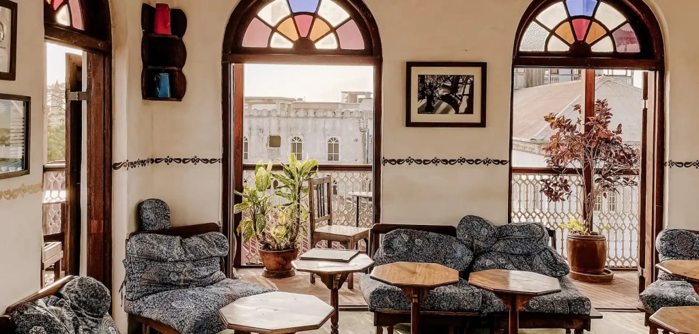
Coconut rice
Coconut rice is a staple of Zanzibar’s local cuisine and the most popular side dish on the island. It pairs perfectly with fried meats, seafood, and curries. The secret lies in cooking basmati rice not in water but coconut milk, which gives it a rich, creamy flavor. Cooks add spices to enhance the rice’s enticing aroma. The finished rice is typically only lightly sweet, making it the perfect complement to the bold flavors of meat and fish dishes.
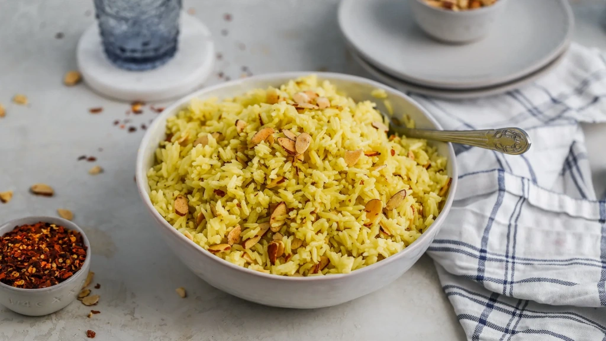
Where can I try it?
Like biryani, Zanzibar Coffee House also serves excellent coconut rice infused with fragrant herbs.
If you're on Pemba Island, visit the Gecko Nature Lodge restaurant. Here, you can try its incredible combination with fresh seafood.
Mishkaki
Small pieces of meat grilled on skewers over an open flame are a classic street food in Zanzibar. This local take on kebabs is cooked on the grill, giving it a mouthwatering smoky aroma. The meat, typically beef or chicken, is cut into small cubes and marinated. The marinade is key to the dish's flavor, typically made with yogurt, garlic, ginger, lemon juice, and a mix of spices that give the marinated meat a tangy kick. The combination of creamy richness and local seasonings creates an irresistible flavorful mishkaki.
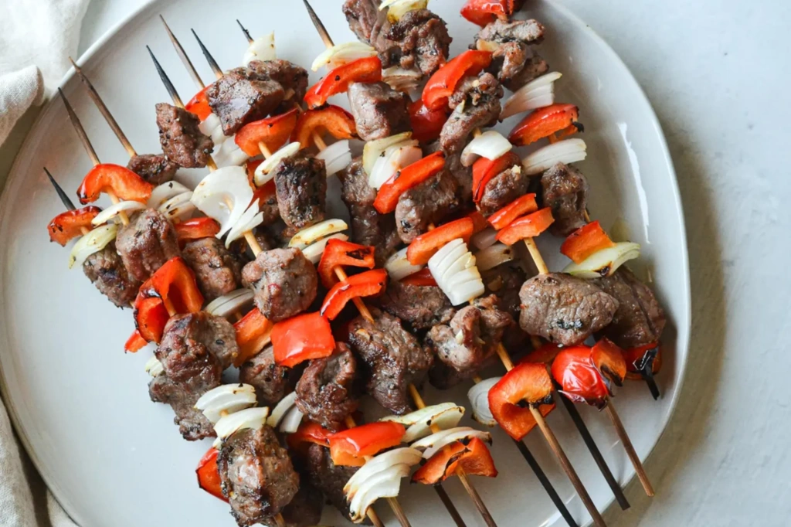
Where can I try it?
You can find mishkaki in nearly every local spot, from street kiosks to restaurants. However, locals and tourists agree that one of the best versions of this dish is served at Lukmaan in Stone Town. The chefs here are true masters of mishkaki. The restaurant is modest, with no extravagant décor or stunning views, but it's the place to try the most delicious Zanzibar-style kebabs. You can also enjoy local seafood pilaf, biryani, and chapati, making it a must-visit for food lovers.

Spiced tuna steak
This dish is relatively simple to prepare, but all the grilled fish lovers will appreciate the fresh catch, grilled shortly after it’s caught, and the unique blend of Zanzibar spices. Though likely introduced under Western influence, the tuna steak has developed a distinctly Zanzibari character. A thick piece of tuna is evenly seared on all sides in olive oil and generously seasoned with coriander, cumin, paprika, and other spices. Finally, a couple of lime wedges are added for a refreshing touch.
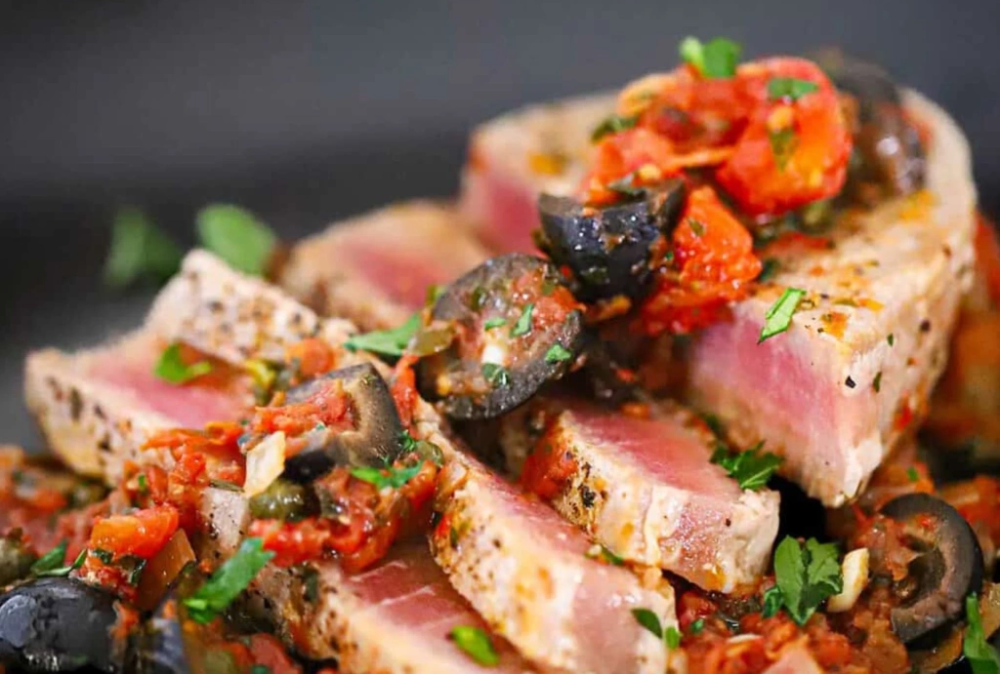
Where can I try it?
The chefs at the Emerson Spice Hotel in Stone Town serve a luxurious, rich tuna steak made from the freshest fish. Guests can enjoy delicious food on the rooftop of a former merchant's house, which offers breathtaking waterfront views. For a truly memorable experience, we recommend booking a table closer to sunset so you can enjoy your meal with a stunning sunset in the background. The restaurant also features a cozy space called the Secret Garden, where live music is occasionally performed in the evenings.
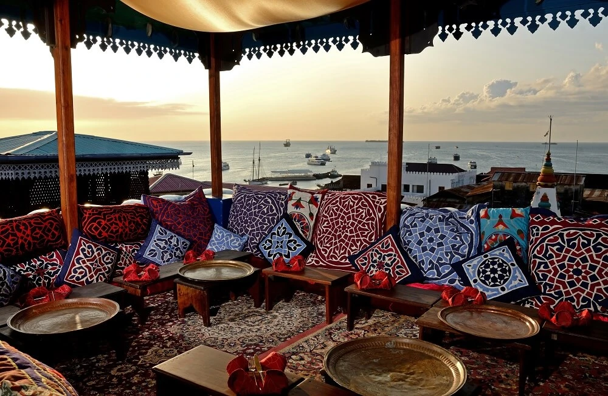
Traditional Zanzibar drinks
Like its cuisine, Zanzibar’s traditional drinks reflect the island’s diverse cultural influences. Sampling them offers a deeper connection to local life.
Sugar cane juice. While visiting the archipelago, you’ll almost certainly come across vendors squeezing fresh sugar cane juice right on the streets or along the waterfront. This drink is also popular in Latin America, North Africa, and Southeast Asia, but it's considered one of Zanzibar’s signature beverages. It’s typically served with lime wedges and a bit of ginger. The flavor is sweet with a subtle spiciness, making it the perfect refreshment to quench your thirst on a hot, sunny day.
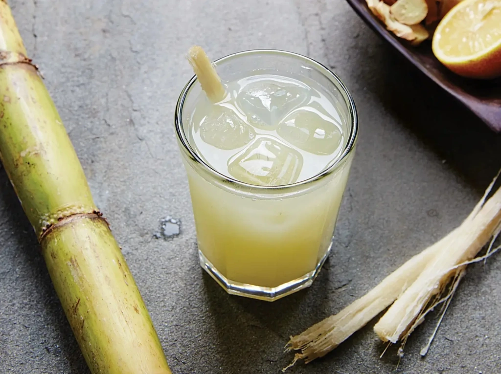
Refreshing "Dawa" cocktail. Another signature drink of the paradise island is a local cocktail Dawa. The name, derived from Swahili, translates to "medicine." It’s a simple, light cocktail with honey, lime, and vodka. Served over ice, it’s perfect for an evening aperitif after a hot day under the scorching Zanzibar sun.
"Chai ya Mdalasini." This popular local tea is flavored with cinnamon, cardamom, cloves, and other aromatic spices. Despite the tropical heat, it's served hot, a clear nod to Arab traditions.
Coconut water is not only delicious but also packed with health benefits. It is a treasure trove of electrolytes and antioxidants. Coconut water is essential for staying hydrated in the heat and is also a great remedy for a hangover.
Zanzibar’s traditional food and drinks are essential to the travel experience, offering a real taste of island life. From spiced pilaf and tender octopus in curry sauce to light, sweet mandazi donuts and refreshing sugarcane juice, every dish here is infused with centuries of history. Food in Zanzibar isn't just about satisfying hunger, but an opportunity to connect with the rich culture of the East African coast.
All content on Angelino Adventures is created with expert insights and thorough research, in line with our Editorial Policy.


Want to know more about Tanzania adventures?
Get in touch with our team! We've explored all the top destinations across Tanzania. Our Kilimanjaro-based adventure consultants are ready to share tips and help you plan your unforgettable journey.
 Tanzania Safaris
Tanzania Safaris
 Kilimanjaro and other mountains
Kilimanjaro and other mountains
 About Angelino Adventures
About Angelino Adventures
 About Tanzania
About Tanzania